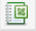
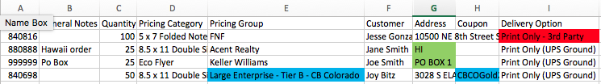

Login to the order manager (Click here to access the order manager). On the navigation bar, select ORDERS, then ORDER MANAGER. You should now be on the oder management page. Select the drop down menu for STATUS and select SHIPPING LABELS to filter for orders with the status of shipping labels.
On the order manager, check for internal orders by searching relevant names (Jessica Cellars, Sophie Bel, Jacqualyn Lindo, Lisa Harris). If applicable, account for the order(s) on the warehouse floor. Once accounted for, change the status of the order to delivered.
On the order manager, change the target date for orders that need weight validation (Notepads, SSB, custom orders) OR orders that are not ready to be shipped on the specific date. (Sticky notes, perfect bound booklets, envelope orders)
Select the drop down menu for TARGET DATE and select SPECIFIC DATE to filter orders with the desired specific date.
Select  icon to download the displayed orders onto an excel spreadsheet.
Proceed to the BUSINESS RULES section below for instructions on how to prioritize and print labels for orders that require specific business rules.
On the navigation bar above, select ORDER MANAGER for instructions on how to print label(s) using the order manager.
On the navigation bar above, select SHIPPING MANAGER for instructions on how to print label(s) using the shipping manager.
Business Rules
Open the spreadsheet. The columns should consist of the headers shown in the image below.

Check column B (General Notes) and if there's a general note, make sure the order is processed as requested on the general note.
Filter column I (Delivery option) and look for orders with the delivery option of PRINT ONLY - 3RD PARTY: FEDEX. Copy the order number(s) and paste the order number(s) into the search form on the order manager. Once the order(s) display on the order manager, click on the order number to access the DELIVERY tab for each order. Verify that there isn't a SUB-DELIVERY OPTION that is > GROUND. If there is a sub-delivery option > ground, individually process the order on the shipping manager with the corresponding sub-delivery option.
Filter column G (Address) and look for addresses located in HAWAII along with PO BOXES. Copy the order number(s) and paste the order number(s) into the search form on the order manager. Figure out which flate rate package the order can fit in and create a USPS FLAT RATE LABEL on the order manager.
Filter column E (Pricing Group) and look for Large Enterprise - Tier B - CB Colorado. If the order has a delivery option of GROUND and has a COUPON CODE, upgrade the shipment to UPS 2nd Day Air.
Filter column F (Customer) and look for identical customer names with identical delivery address. These orders are to be combined and shipped together on the shipping manager.
Last, filter column D (Pricing Category) and generate labels on the shipping manager by product code. Only search and print labels by product code for PF4, BR88, and PF. Once that is complete, search for todays date and print the remaining labels all at once.